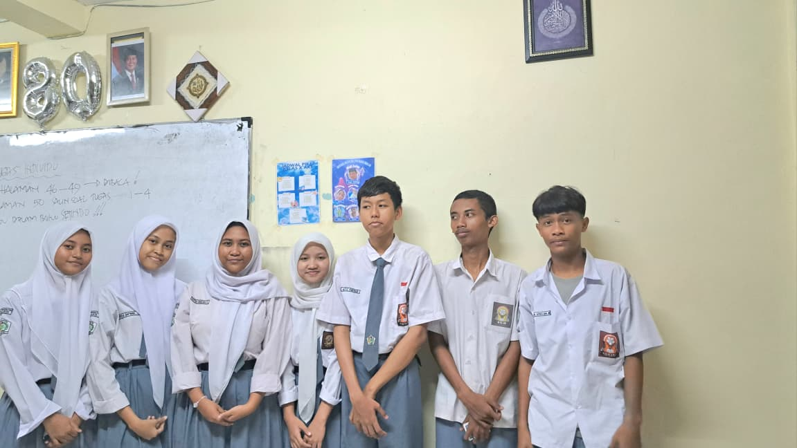

think smart,act digital,be the future
PISANG COKLAT KEJU
kelompok 1 membuat presentasi makanan olahan pisang coklat keju, yang berbahan utama keju menjadikan makanan yang sehat dan bergizi,kita juga membuat yel yel 7 kebiasaan anak hebat. ALAT DAN BAHAN: 4 buah pisang, 4 lembar kulit lumpia, 4 sdm meses coklat, 4 sdm keju parut, 1 butir putoih telur, dan mimyak goreng. LANGKAH-LANGKAH: 1. kupas pisang,lalu potong menjadi 2 bagian atau sesuai selera. 2. letakkan potongan pisang di atas kulit lumpia. 3. tambahkan meses coklat dan keju parut di atas pisang. 4. gulung kulit lumpia dengan rapat,rekatkan ujungnya menggunakan putih telur. 5. panaskan minyak di wajan. 6. goreng pisang yang sudah dibungkus hingga berwarna kuning keemasan. 7. angkat dan tiriskan. 8. sajikan selagi hangat dengan taburan keju dan coklat sebagai topping.
SUMMARY OF INSTAGRAM'S HISTORY AND FOUNDERS: Instagram was launched on october 6,2010, stemming from a company called Burbn,inc,founded by kevin systrom and mike krieger.the platfrom quickly became popular as anew innovation in photo and video-based social networking.initially,burbn was a location-based application project combined with mobile photography,allowing users to share photos and check in at locations.however,systrom felt the app was too similar to foursquare, a popular location-sharing app at the time. systrom,a stanford graduate who had prior experience at Google and twitter(ODEO),along with krieger,decided to pivot and focus on developing an app solely dedicated to sharing photos and videos. they saw potential in existing photography apps that offered filters but lacked social media features.from this concept,they created instagram-an app that allows users to share photos,apply digital filters,and include social features such as "likes" and "comments". klik disini
Berikut tabel perbandingan kecepatan belajar antara sekolah biasa dan smart school
| Rentang Usia | 2023 | 2024 | 2025 |
|---|---|---|---|
| Balita 3-5 Tahun | 19% | 32,17% | 35,43% |
| Anak-anak 6-10 Tahun | 32,17% | 35,57% | 48% |
| Remaja 11-18 | 8,4% | 54,1% | 48% |
| Lansia 60 keatas | 60,4% | 60,52% | 59,40% |
IPAS mempelajari hubungan antara makhluk hidup dan lingkungannya,termasuk komponen biotik dan abiotik,interaksi dalam ekosistem,serta berbagai masalah lingkungan seperti pencemaran,sampah,dan kerusakan alam. selain itu,IPAS membahas sumber energi terbarukan dan tidak terbarukan,cara pemanfaatan dan penghematan energi, serta teknologi ramah lingkungan seperti panel surya,lampu hemat energi,dan pengolahan sampah.materi ini juga menyoroti dampak sosial dari perubahan lingkungan dan perkembangan teknologi terhadap kehidupan masyarakat,serta pentingnya peran manusia dalam menjaga kelestarian lingkungan secara berkelanjutan.
Website ini dibuat dengan bahasa HTML dan CSS. HTML digunakan untuk menulis struktur isi seperti teks dan tabel,sedangkan CSS untuk membuat tampilan lebih menarik dan berwarna.
contoh kode yang digunakan
&1t;h2>ini contoh penggunaan coding &1t;/h2>
&1t;p>web kokurikuler siswa belajar lebih efisien bisa kalian variasikan.&1t;/p>